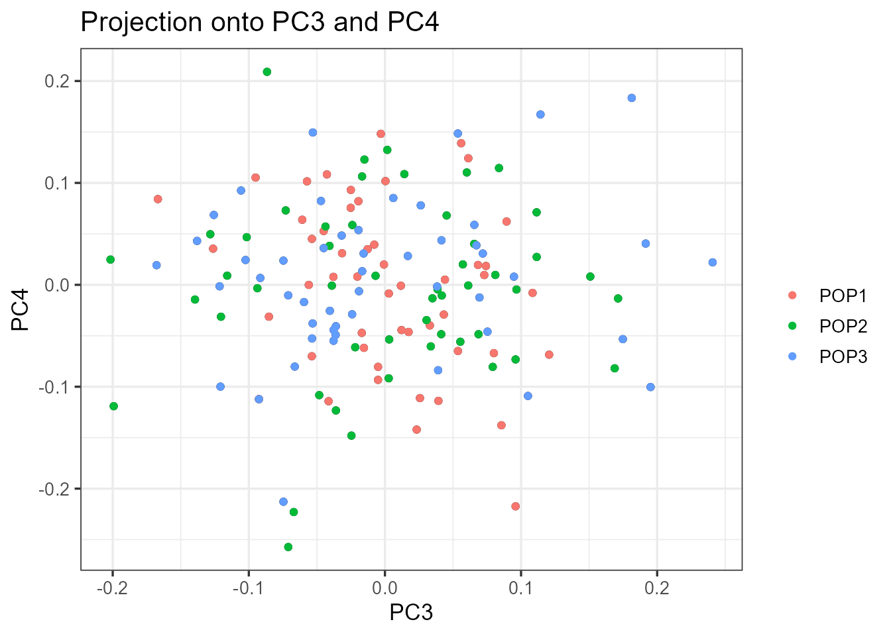
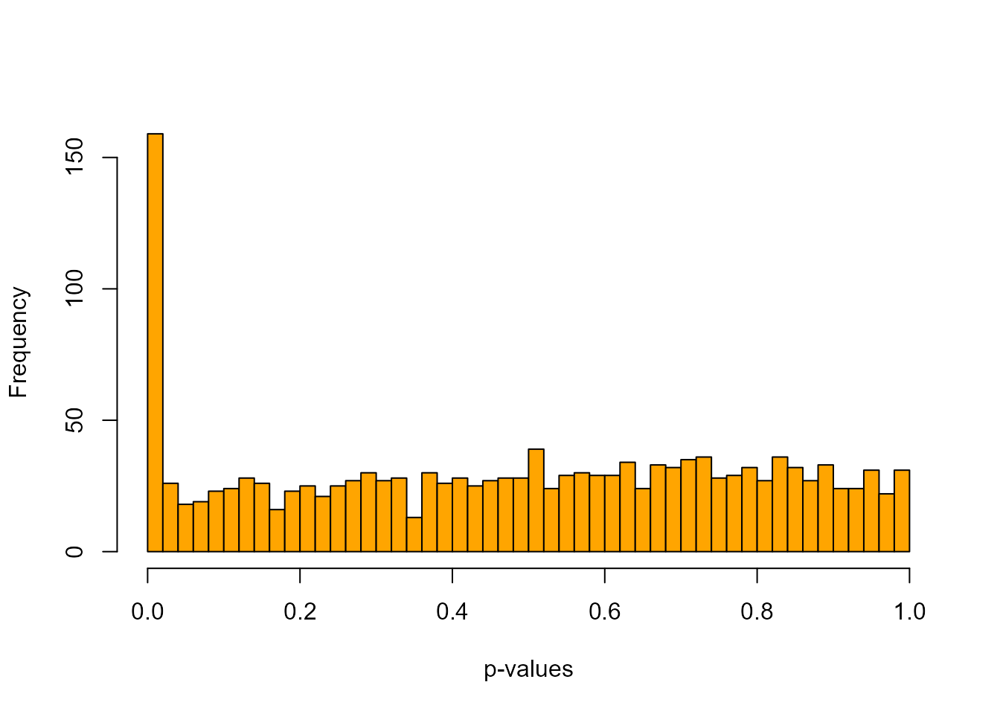
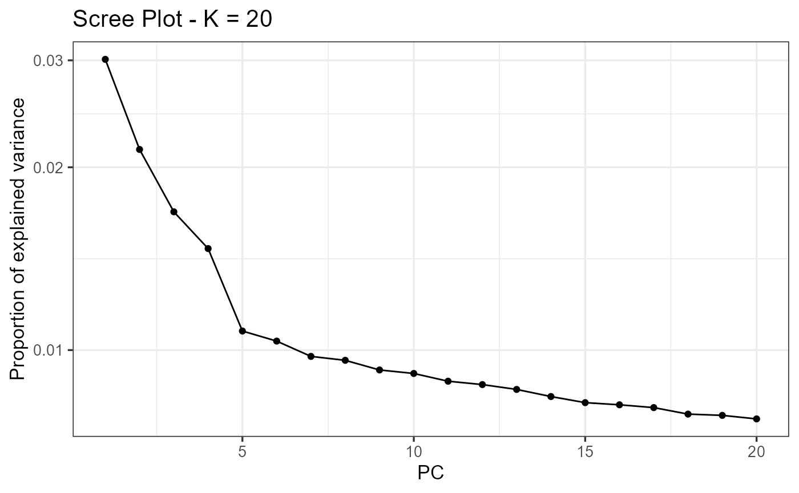
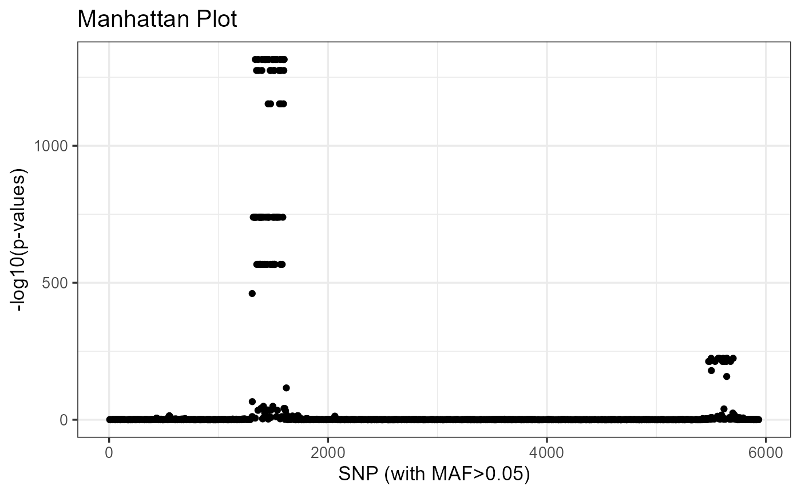
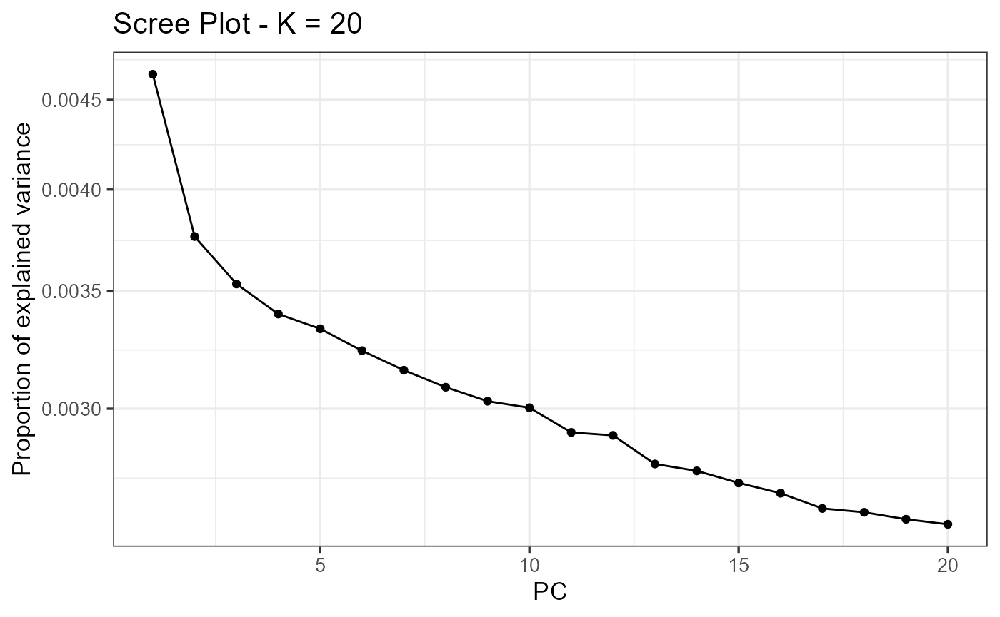
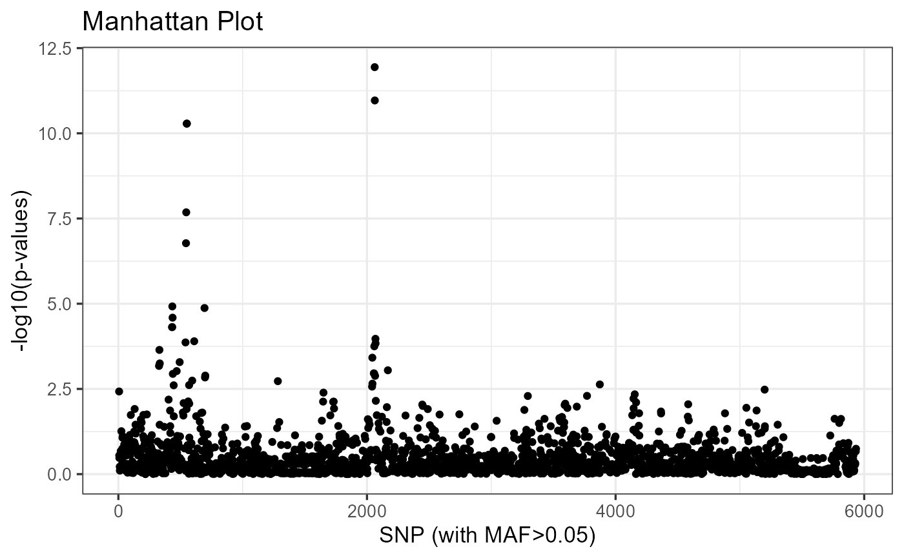

Using pcadapt to detect local adaption.
Keurcien Luu, Michael G.B. Blum
pcadapt has been developed to detect genetic markers involved in biological adaptation. pcadapt provides statistical tools for outlier detection based on Principal Component Analysis (PCA).
In the following, we show how the pcadapt package can perform genome scans for selection based on individual genotype data. We show how to run the package using the example geno3pops that contains genotype data. A total of 150 individuals coming from three different populations were genotyped at 1,500 diploid markers. Simulations were performed with simuPOP using a divergence model assuming that 150 SNPs confer a selective advantage. To run the package on the provided example, just copy and paste shaded R chunks.
To run the package, you need to install the package and load it using the following command lines:
install.packages("pcadapt")
library(pcadapt)A. Reading genotype data
A.1. read.pcadapt with individual genotype data
You should use the read.pcadapt function to convert your genotype file to the pcadapt format. pcadapt files should have individuals in columns, SNPs in lines, and missing values should be encoded with 9’s. read.pcadapt converts different types of files to the pcadapt format and returns a character string containing the name of the converted file, which should be used as input for the pcadapt function. The current version of read.pcadapt supports three formats: “vcf”, “ped”, and “lfmm”. For example, assume your genotype file is called “foo.lfmm” and is located in the directory “path_to_directory”, use the following command lines:
path_to_file <- "path_to_directory/foo.lfmm"
filename <- read.pcadapt(path_to_file, type = "lfmm")To run the provided example, the file location of the example should be retrieved and then read.pcadapt will convert the “lfmm” example file to the “pcadapt” format.
path_to_file <- system.file("extdata", "geno3pops.lfmm", package = "pcadapt")
filename <- read.pcadapt(path_to_file, type = "lfmm")
A.2. read.pcadapt with pooled sequencing data
For pooled samples, the package also uses the read.pcadapt function. The function samples genotypes in each pool using binomial random draws with the provided frequencies. The function creates a file containing the samples genotypes.
We assume that the user provides a frequency matrix with n rows and L columns (where n is the number of populations and L is the number of genetic markers). Assume your frequency file is called “foo” and is located in the directory “path_to_directory”, use the following command lines:
pool.data <- read.table("path_to_directory/foo")
filename <- read.pcadapt(pool.data, type = "pool")A Pool-seq example is provided in the package, and can be loaded as follows:
pool.data <- read.table(system.file("extdata", "pool3pops", package = "pcadapt"))
filename <- read.pcadapt(pool.data, type = "pool")By default, the function samples 100 individuals in each population and this number can be changed using the pop.sizes argument. Here is an example with 200 individuals in each population. In practice, users should prefer to consider 200 sampled individuals in each population or more.
pool.data <- read.table(system.file("extdata", "pool3pops", package = "pcadapt"))
filename <- read.pcadapt(pool.data, type = "pool", pop.sizes = c(200, 200, 200))You may also specify ploidy in the read.pcadapt function using the ploidy argument (by default, it is equal to 2). Because individual genotype data have been sampled from pooled sequencing data, the rest of the tutorial is the same for both situations.
B. Choosing the number K of Principal Components
UPDATE 3.1.0: it is now possible to run pcadapt on genotype matrices already loaded in the R session, assuming it is in the pcadapt format.
The pcadapt function performs two successive tasks. First, PCA is performed on the centered and scaled genotype matrix. The second stage consists in computing test statistics and p-values based on the correlations between SNPs and the first K principal components (PCs). To run the function pcadapt, the user should specify the pcadapt file location filename or use the output returned by the function read.pcadapt, along with the number K of principal components to work with.
To choose K, principal component analysis should first be performed with a large enough number of principal components (e.g. K=20).
x <- pcadapt(input = filename, K = 20) #or x <- pcadapt(input = matrix, K = 20)## Reading file /Users/luuk/Documents/thesis/git/pcadapt/inst/extdata/geno3pops.pcadapt...
## Number of SNPs: 1500
## Number of individuals: 150NB: by default, data are assumed to be diploid. To specify the ploidy, use the argument ploidy (ploidy=2 for diploid species and ploidy = 1 for haploid species) in the pcadapt function.
B.1. Scree plot
The ‘scree plot’ displays in decreasing order the percentage of variance explained by each PC. Up to a constant, it corresponds to the eigenvalues in decreasing order. The ideal pattern in a scree plot is a steep curve followed by a bend and a straight line. The eigenvalues that correspond to random variation lie on a straight line whereas the ones that correspond to population structure lie on a steep curve. We recommend to keep PCs that correspond to eigenvalues to the left of the straight line. In the provided example, K = 2 is the optimal choice for K. The plot function displays a scree plot:
plot(x, option = "screeplot")
By default, the number of principal components taken into account in the scree plot is set to K, but it can be reduced via the argument K.
plot(x, option = "screeplot", K = 10)
B.2. Score plot
Another option to choose the number of PCs is based on the ‘score plot’ that displays population structure. The score plot displays the projections of the individuals onto the specified principal components. Using the score plot, the choice of K can be limited to the values of K that correspond to a relevant level of population structure.
When population labels are known, individuals of the same populations can be displayed with the same color using the pop argument, which should contain the list of indices of the populations of origin. In the geno3pops example, the first population is composed of the first 50 individuals, the second population of the next 50 individuals, and so on. Thus, a vector of indices or characters (population names) that can be provided to the argument pop should look like this:
# With integers
poplist.int <- c(rep(1, 50), rep(2, 50), rep(3, 50))
# With names
poplist.names <- c(rep("POP1", 50),rep("POP2", 50),rep("POP3", 50))
print(poplist.int)## [1] 1 1 1 1 1 1 1 1 1 1 1 1 1 1 1 1 1 1 1 1 1 1 1 1 1 1 1 1 1 1 1 1 1 1 1
## [36] 1 1 1 1 1 1 1 1 1 1 1 1 1 1 1 2 2 2 2 2 2 2 2 2 2 2 2 2 2 2 2 2 2 2 2
## [71] 2 2 2 2 2 2 2 2 2 2 2 2 2 2 2 2 2 2 2 2 2 2 2 2 2 2 2 2 2 2 3 3 3 3 3
## [106] 3 3 3 3 3 3 3 3 3 3 3 3 3 3 3 3 3 3 3 3 3 3 3 3 3 3 3 3 3 3 3 3 3 3 3
## [141] 3 3 3 3 3 3 3 3 3 3print(poplist.names)## [1] "POP1" "POP1" "POP1" "POP1" "POP1" "POP1" "POP1" "POP1" "POP1" "POP1"
## [11] "POP1" "POP1" "POP1" "POP1" "POP1" "POP1" "POP1" "POP1" "POP1" "POP1"
## [21] "POP1" "POP1" "POP1" "POP1" "POP1" "POP1" "POP1" "POP1" "POP1" "POP1"
## [31] "POP1" "POP1" "POP1" "POP1" "POP1" "POP1" "POP1" "POP1" "POP1" "POP1"
## [41] "POP1" "POP1" "POP1" "POP1" "POP1" "POP1" "POP1" "POP1" "POP1" "POP1"
## [51] "POP2" "POP2" "POP2" "POP2" "POP2" "POP2" "POP2" "POP2" "POP2" "POP2"
## [61] "POP2" "POP2" "POP2" "POP2" "POP2" "POP2" "POP2" "POP2" "POP2" "POP2"
## [71] "POP2" "POP2" "POP2" "POP2" "POP2" "POP2" "POP2" "POP2" "POP2" "POP2"
## [81] "POP2" "POP2" "POP2" "POP2" "POP2" "POP2" "POP2" "POP2" "POP2" "POP2"
## [91] "POP2" "POP2" "POP2" "POP2" "POP2" "POP2" "POP2" "POP2" "POP2" "POP2"
## [101] "POP3" "POP3" "POP3" "POP3" "POP3" "POP3" "POP3" "POP3" "POP3" "POP3"
## [111] "POP3" "POP3" "POP3" "POP3" "POP3" "POP3" "POP3" "POP3" "POP3" "POP3"
## [121] "POP3" "POP3" "POP3" "POP3" "POP3" "POP3" "POP3" "POP3" "POP3" "POP3"
## [131] "POP3" "POP3" "POP3" "POP3" "POP3" "POP3" "POP3" "POP3" "POP3" "POP3"
## [141] "POP3" "POP3" "POP3" "POP3" "POP3" "POP3" "POP3" "POP3" "POP3" "POP3"If this field is left empty, the points will be displayed in black. By default, if the values of i and j are not specified, the projection is done onto the first two principal components.
plot(x, option = "scores", pop = poplist.int)
plot(x, option = "scores", pop = poplist.names)
Looking at population structure beyond K = 2 confirms the results of the scree plot. The third and the fourth principal components do not ascertain population structure anymore.
plot(x, option = "scores", i = 3, j = 4, pop = poplist.names)
C. Computing the test statistic based on PCA
For a given SNP, the test statistic is based on the \(z\)-scores obtained when regressing SNPs with the K principal components. The test statistic for detecting outlier SNPs is the Mahalanobis distance, which is a multi-dimensional approach that measures how distant is a point from the mean. Denoting by \(z^j = (z_1^j, \dots, z_K^j)\) the vector of K \(z\)-scores between the \(j\)-th SNP and the first K PCs, the sqaured Mahalanobis distance is defined as
\[D_j^2 = (z^j - \bar{z})\Sigma^{-1}(z^j - \bar{z})\]
where \(\bar{z}\) and \(\Sigma\) are robust estimates of the mean and of the covariance matrix. Once divided by a constant \(\lambda\) called the genomic inflation factor, the scaled squared distances \(D_j^2/\lambda\) should have a chi-square distribution with K degrees of freedom under the assumption that there are no outlier.
For the geno3pops data, it was found in section B that K=2 corresponds to the optimal choice of the number of PCs.
x <- pcadapt(filename, K = 2)## Reading file /Users/luuk/Documents/thesis/git/pcadapt/inst/extdata/geno3pops.pcadapt...
## Number of SNPs: 1500
## Number of individuals: 150In addition to the number K of principal components to work with, the user can also set the parameter min.maf that corresponds to a threshold of minor allele frequency. By default, the parameter min.maf is set to 5%. P-values of SNPs with a minor allele frequency smaller than the threshold are not computed (NA is returned).
The object x returned by the function pcadapt contains numerical quantities obtained after performing a PCA on the genotype matrix.
summary(x)We assume in the following that there are n individuals and L markers.
statis a vector of sizeLcontaining squared Mahalanobis distances by default.pvaluesis a vector containingLp-values.mafis a vector of sizeLcontaining minor allele frequencies.gifis a numerical value corresponding to the genomic inflation factor estimated fromstat.chi2.statis a vector of sizeLcontaining the rescaled statisticsstat/gifthat follow a chi-squared distribution withKdegrees of freedom.scoresis a(n,K)matrix corresponding to the projections of the individuals onto each PC.loadingsis a(L,K)matrix containing the correlations between each genetic marker and each PC.singular.valuesis a vector containing theKordered squared root of the proportion of variance explained by each PC.zscoresis a(L,K)matrix containing the \(z\)-scores.
All of these elements are accessible using the $ symbol. For example, the p-values are contained in x$pvalues.
D. Graphical tools
D.1. Manhattan Plot
A Manhattan plot displays \(-\text{log}_{10}\) of the p-values.
plot(x , option = "manhattan")
D.2. Q-Q Plot
The user is also given the possibility to check the distribution of the p-values using a Q-Q plot
plot(x, option = "qqplot", threshold = 0.1)
On the right side of the grey dotted line are the top 10% lowest p-values. This plot confirms that most of the p-values follow the expected uniform distribution. However, the smallest p-values are smaller than expected confirming the presence of outliers.
D.3. Histograms of the test statistic and of the p-values
A histogram of p-values confirms that most of the p-values follow the uniform distribution, and that the excess of small p-values indicates the presence of outliers.
hist(x$pvalues, xlab = "p-values", main = NULL, breaks = 50)
The presence of outliers is also visible when plotting a histogram of the test statistic \(D_j\).
plot(x, option = "stat.distribution")
E. Choosing a cutoff for outlier detection
To provide a list of outliers, we recommend using the R package qvalue, transforming the p-values into q-values. To install and load the package, type the following command lines:
## try http if https is not available
source("https://bioconductor.org/biocLite.R")
biocLite("qvalue")
library(qvalue)For a given \(\alpha\) (real valued number between \(0\) and \(1\)), SNPs with q-values less than \(\alpha\) will be considered as outliers with an expected false discovery rate bounded by \(\alpha\). The false discovery rate is defined as the percentage of false discoveries among the list of candidate SNPs. Here is an example of how to provide a list of candidate SNPs for the geno3pops data, for an expected false discovery rate lower than 10%:
library(qvalue)
qval <- qvalue(x$pvalues)$qvalues
alpha <- 0.1
outliers <- which(qval < alpha)It may be interesting to know which principal components are actually the most correlated with the oulier SNPs. The function get.pc allows to achieve that:
snp_pc <- get.pc(x, outliers)F. Advanced Usage
F.1. How to handle missing values
Any missing value is encoded with a 9 in the pcadapt format. This encoding is automatically done with read.pcadapt if it has been used to convert “ped”, “vcf” or “lfmm” files.
F.2. Computing other test statistics
The default option uses the Mahalanobis distance as a test statistic to seek for outlier SNPs, but other statistics can be computed based on the correlations between SNPs and principal components. However except for power users, we recommend to use the Mahalanobis distance that provides the best rankings of SNPs in most cases we have investigated.
F.2.1. Communality
The communality statistic measures the proportion of variance explained by the first K PCs. When there are K+1 populations, the communality statistic provides a ranking similar to the widely used Fst statistic. P-values are computed using a chi-square approximation (Duforet-Frebourg et al. 2015). The test based on the communality statistic can be performed by setting method to communality in the pcadapt function.
x_com <- pcadapt(filename, K = 2, method = "communality")## Reading file /Users/luuk/Documents/thesis/git/pcadapt/inst/extdata/geno3pops.pcadapt...
## Number of SNPs: 1500
## Number of individuals: 150The communality can be approximated by a constant times a chi-square distribution, allowing to compute p-values for each SNP.
plot(x_com, option = "stat.distribution")
F.2.2 Component-wise
Another possibility (component-wise p-values) is to perform one genome scan for each principal component. The test statistics are the loadings, which correspond to the correlations between each PC and each SNP. P-values are computed by making a Gaussian approximation for each PC and by estimating the standard deviation of the null distribution.
x_cw <- pcadapt(filename, K = 2, method = "componentwise")## Reading file /Users/luuk/Documents/thesis/git/pcadapt/inst/extdata/geno3pops.pcadapt...
## Number of SNPs: 1500
## Number of individuals: 150summary(x_cw$pvalues)## V1 V2
## Min. :0.0000 Min. :0.0000
## 1st Qu.:0.1434 1st Qu.:0.3259
## Median :0.4229 Median :0.5724
## Mean :0.4322 Mean :0.5514
## 3rd Qu.:0.6882 3rd Qu.:0.7971
## Max. :0.9999 Max. :0.9995pcadapt returns K vectors of p-values (one for each principal component), all of them being accessible, using the $ symbol or the [] symbol. For example, typing x_cw$pvalues$p2 or x_cw$pvalues[,2] in the R console returns the list of p-values associated with the second principal component (provided that K is larger than or equal to 2).
The p-values are computed based on the matrix of loadings. The loadings of the neutral markers are assumed to follow a centered Gaussian distribution. The standard deviation of the Gaussian distribution is estimated using the median absolute deviation.
To display the neutral distribution for the component-wise case, the value of K has to be specified.
plot(x_cw, option = "stat.distribution", K = 2)
Changelog
| Date | Version | Changes |
|---|---|---|
| 01-15-2017 | 3.1.0 | - Switch from C/Lapack to Rcpp/RcppArmadillo. |
- pcadapt can take genotype matrices as input. |
||
| - Modified code for binomial sampling. | ||
- pcadapt argument clean.files is now deprecated. |
||
- pcadapt argument output.filename is now deprecated. |
||
- read.pcadapt argument local.env is now deprecated. |
||
- Latest update of vcfR taken into account. |
||
| 12-20-2016 | 3.0.4 | - Method based on sampling genotypes added to handle pooled-sequencing. |
| 10-06-2016 | 3.0.3 | - Option type="vcfR" has been added to read.pcadapt to overcome some conversion issues occuring with VCF files. |
- Argument transpose is now deprecated. Read section A for more details. |
||
| 06-13-2016 | 3.0.2 | - The function get.pc has been added. For each SNP, it returns the most correlated principal component. |
| 06-01-2016 | 3.0.1 | - The read4pcadapt is now deprecated, it is now called read.pcadapt. |
- Using the pop option when plotting scores now provides the color legend. |
||
| 04-04-2016 | 3.0 | - All analyses are now included in the R package. Users should not use the C software PCAdapt fast anymore. |
- Big datasets can be handled directly within the R session. |
||
- read4pcadapt now converts files to the pcadapt format. |
||
- The first argument of pcadapt can be either a small genotype matrix or the output of read4pcadapt. |
||
| 02-12-2016 | 2.2 | - The Mahalanobis distance is now estimated from the z-scores rather than the loadings. |
| - Make sure you have downloaded the latest version of the C software PCAdapt (last updated on February, 11th, 2016). | ||
| 01-05-2016 | 2.1.1 | - Bug fix: vignette header added. |
| 12-18-2015 | 2.1 | - The scaling of the SNP before computing PCA has been changed. Instead of using standard deviation, we now use the squareroot of \(p(1-p)\) (haploid data) or of \(2p(1-p)\) (diploid data) where \(p\) is the minimum allele frequency. |
- Bug fix: the genomic inflation factor has been corrected when K=1. |
||
| - Bug fix: a problem due to high proportion of missing data slowing the program has been fixed. | ||
- Argument "minmaf" has been replaced with "min.maf". |
||
| 2.0.1 | - Vignette corrected: when reading output from the software PCAdapt, we do not mention the deprecated argument PCAdapt in the function pcadapt. |
|
| - Bug fix: an issue occurring when reading outputs from PCAdapt has been fixed. | ||
| - We mention in the vignette how to use Pool-seq data with the C software PCAdapt fast. | ||
| 2.0 | - The default test statistic is not the communality statistic anymore but the Mahalanobis distance. | |
| - Test statistic for Pool-seq data. |
Reference
Luu, K., Bazin, E., & Blum, M. G. B. (2017). pcadapt: an R package to perform genome scans for selection based on principal component analysis. Molecular Ecology Resources 17:67-77.